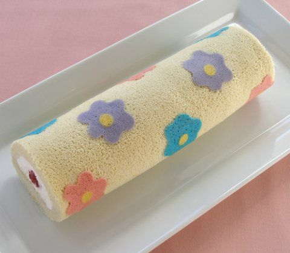

3 Eggs
40g All Purpose Flour
10g Cornstarch
60g Sugar
1 tablespoon Water
Strawberries
Cool Whip
Food Coloring (optional)
Hand mixer
8 in x 12 in pan
Parchment Paper
Sifter
Bowls
Rubber Satula
Whisk
Scale
Around 1.5 hours
One roll cake
1. Sift together the all purpose flour
2. Crack the eggs into a heat safe bowl and mix with a hand mixer until combined
3. Add the sugar and mix until blended
4. Double boil the bowl and mix at low speed. Take it off when the bowl is warm
5. Mix at high speed until the batter makes a soft peak
6. Mix again with low speed adding the water in
7. Sift thirds of the flour in, mixing, until blended, with a spatula
8. Take a little of the batter and add food coloring
9. Make the design on the pan with parchment paper and bake at 354 °F for 1 min
10. Pour the rest of the batter in the pan and flatten by dropping the pan from above the table
11. Bake for 10 minutes
12. Take it out from the oven and from the pan
13. Wait for it to cool down and place parchment paper on top, flipping the cake
14. Pull the paper off and flip over again
15. Put whip cream and fruits on the cake
16. Roll up using the parchment paper
17. Place in the fridge
18. Eat!!!
To get an intricate design use a template from the internet and trace over it with the batter using a toothpick. Just don't forget to take out the paper before you put it in the oven!
